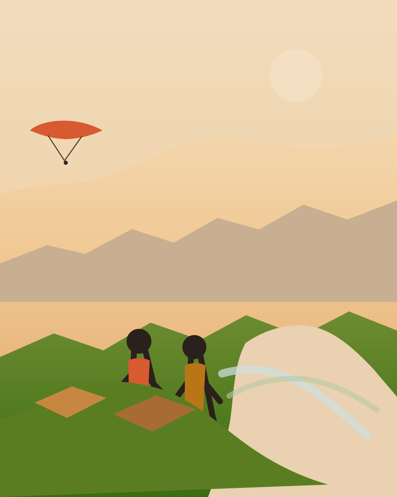
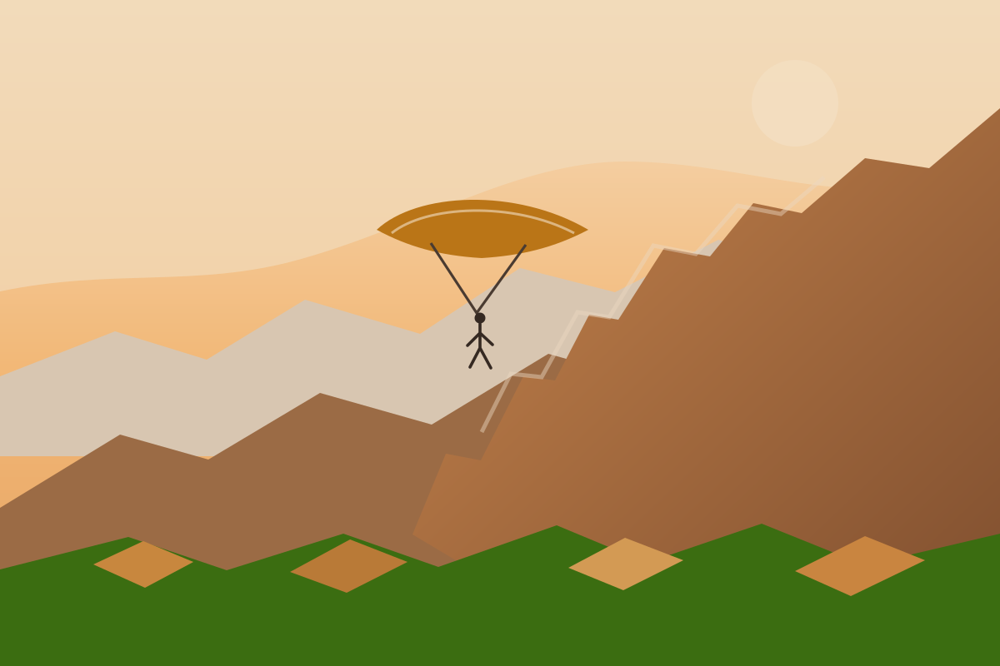
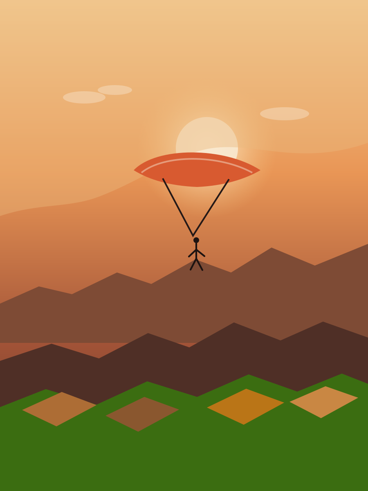
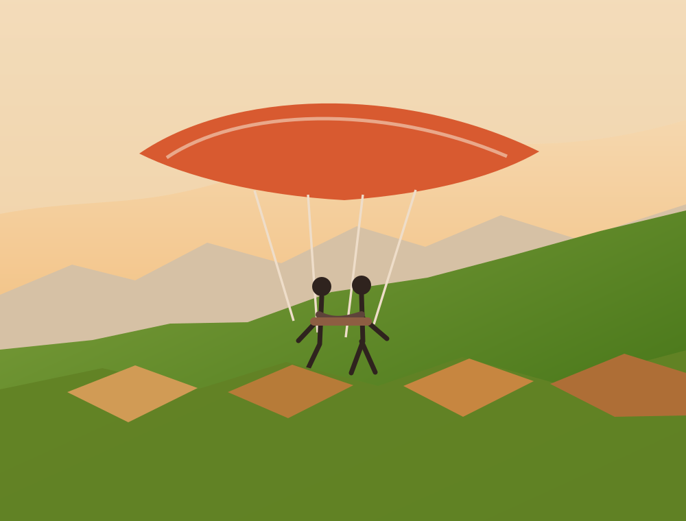
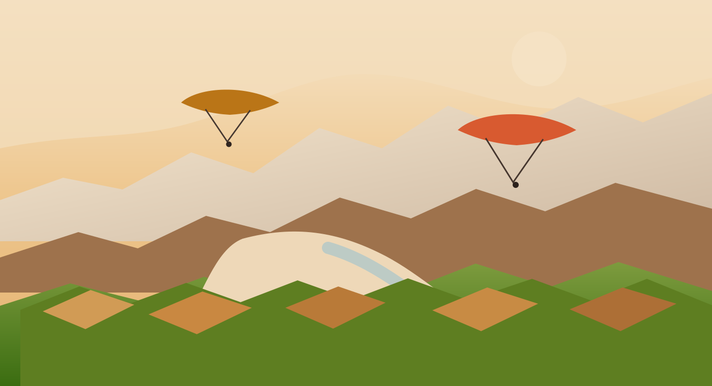
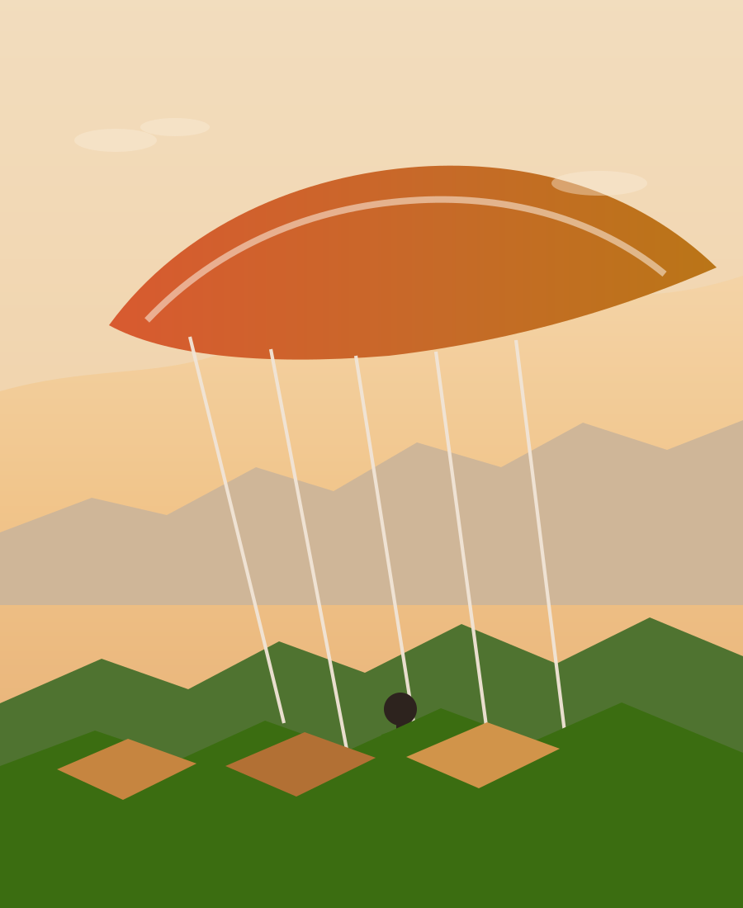

Bautismo en parapente
La entrada perfecta para quienes quieren sentir su primer despegue con acompañamiento total, briefing claro y una experiencia amable desde tierra hasta el aterrizaje.
Ideal para primera vezVuelos en parapente en tándem sobre el Valle del Aconcagua. Santa María, Chile.
Cada vuelo mantiene la misma esencia: cercanía, seguridad y una experiencia pensada para disfrutar el Valle del Aconcagua con intensidad, calma y confianza.
La entrada perfecta para quienes quieren sentir su primer despegue con acompañamiento total, briefing claro y una experiencia amable desde tierra hasta el aterrizaje.
Ideal para primera vezUn recorrido amplio sobre laderas, viñas y horizontes del valle para quienes quieren un vuelo protagonista, con más tiempo en el aire y una emoción más marcada.
Nuestro vuelo insigniaUna propuesta contemplativa para quienes priorizan paisaje, luz y una lectura tranquila del territorio, perfecta para atardeceres y recuerdos visuales inolvidables.
Paisaje y fotografíaDesde el primer mensaje hasta volver a tierra, cuidamos el ritmo de la experiencia para que todo se sienta simple, humano y bien acompañado.
Conversemos por WhatsApp sobre disponibilidad, clima, punto de encuentro y el tipo de vuelo que mejor se ajusta a tu plan.
Hacemos una inducción breve, revisamos equipo, resolvemos dudas y te explicamos con calma el despegue, el vuelo y el aterrizaje.
Corremos unos pasos, el valle se abre frente a ti y todo cambia de escala: aire limpio, horizonte amplio y una sensación total de libertad.
Cerramos la experiencia con una llegada suave, fotos del momento y la certeza de haber visto Santa María desde una perspectiva única.
ACONFLY nace desde el vínculo con el territorio, la conversación honesta y el deseo de compartir el cielo del valle con una atención cercana y confiable.
Martín empezó a volar en parapente a los 14 años. Hoy, con 25, lleva más de una década leyendo el viento, conociendo cada rincón del cielo sobre el Valle del Aconcagua y perfeccionando cada vuelo. Para él, el parapente nunca fue solo un deporte — fue la forma de descubrir que el valle que lo vio crecer es, desde las alturas, algo completamente distinto.
Belén es quien captura esa magia. Con su cámara en mano, documenta cada despegue, cada planeo y cada aterrizaje para que nada de esto se pierda. Gracias a ella, quienes aún no se han animado a volar pueden empezar a imaginar lo que se siente.
Juntos fundamos AconFly con una sola idea en mente: que más personas puedan ver el Valle del Aconcagua desde otra perspectiva. Desde Santa María, donde el viento es bueno y el paisaje no tiene comparación, te invitamos a soltar el suelo aunque sea por unos minutos.

Un recorrido visual por crestas, despegues, panoramas y ese instante en que el suelo deja de ser el centro.
Más escenas y momentos reales en nuestra cuenta de Instagram.
Abrir Instagram




Historias breves de personas que llegaron con nervios, curiosidad o ganas de celebrar algo importante y se fueron con una nueva vista del valle.
“Llegué con nervios y me fui con una sonrisa enorme. La explicación fue clara, el vuelo hermoso y el trato realmente cercano.”
“No se sintió turístico ni impersonal. Fue una aventura bien guiada, cálida y con vistas que todavía sigo recordando.”
“El valle se ve inmenso desde arriba. Se nota el cuidado por la seguridad y por hacerte sentir tranquilo en cada momento.”
Respuestas simples para que llegues con claridad, expectativas realistas y la tranquilidad necesaria para disfrutar la experiencia.
Si quieres cotizar, elegir tu vuelo o resolver dudas sobre fechas y clima, estamos a un mensaje de distancia.
Santa María, Valle del Aconcagua, Chile. Aventuras en parapente en tándem con una atención cercana, cálida y enfocada en seguridad.